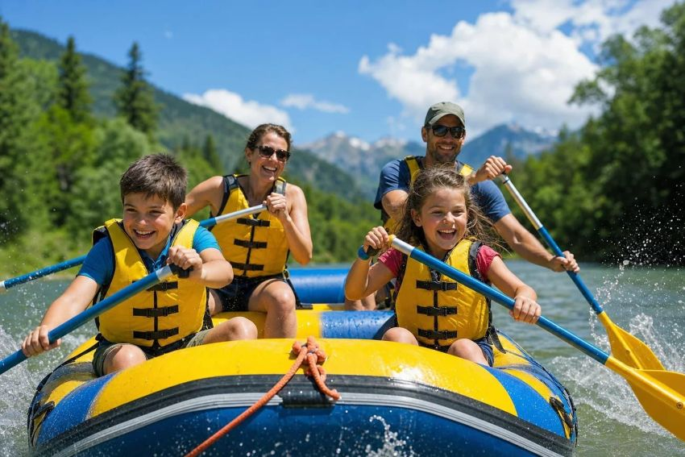
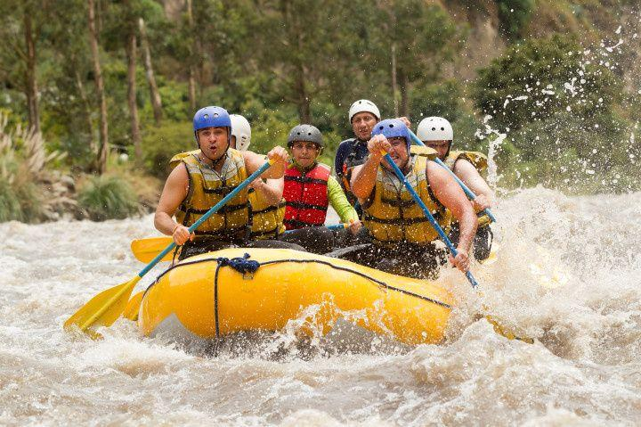
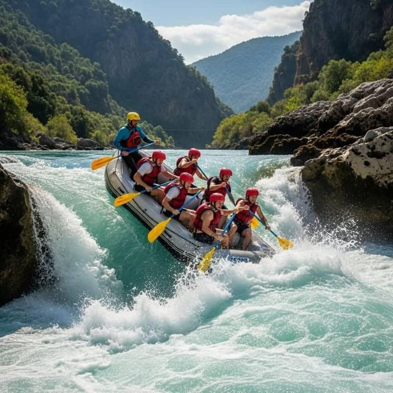

Aventura em Família Iniciantes

Un paseo más tranquilo, ideal para familias y personas que quieren experimentar el rafting por primera vez.

Conheça nossas opções de rafting e escolha a aventura ideal para você!

Un paseo más tranquilo, ideal para familias y personas que quieren experimentar el rafting por primera vez.

Para quienes buscan más emoción, rápidos y una experiencia llena de adrenalina.

Una experiencia más desafiante para personas con experiencia previa, siempre con guías y medidas de seguridad adecuadas.
| Pacote | Dificuldade | Duração |
|---|---|---|
| Aventura em Família | Iniciante | 2 horas |
| Aventura Radical | Intermediário | 3 horas |
| Desafio Máximo | Avançado | 4 horas |